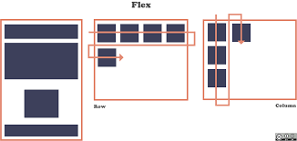

Flex box
El Módulo de Caja Flexible, comúnmente llamado Flex box, fue diseñado como un modelo unidimensional de layout,
Cuando describimos a Flex box como unidimensional destacamos el hecho que Flex box maneja el layout en una sola dimensión
a la vez — ya sea como fila o como columna.
Cuando trabajamos con Flex box necesitamos pensar en términos de dos ejes.
el eje principal y el eje cruzado, El eje principal está definido por la propiedad flex-direction,
y el eje cruzado es perpendicular a este.
lo que hacemos con Flex box está referido a estos dos ejes, por lo que vale la pena entender
cómo trabajan desde el principio.
El eje principal está definido por flex-direction, que posee cuatro posibles valores:
• row
• row-reverse
• column
• column-reverse
Si elegimos row o row-reverse, el eje principal correrá a lo largo de la fila según la dirección de la línea.
Al elegir column o column-reverse el eje principal correrá desde el borde superior
de la página hasta el final — según la dirección del bloque.
https://developer.mozilla.org/es/docs/Web/CSS/CSS_Flexible_Box_Layout/Basic_Concepts_of_Flexbox 